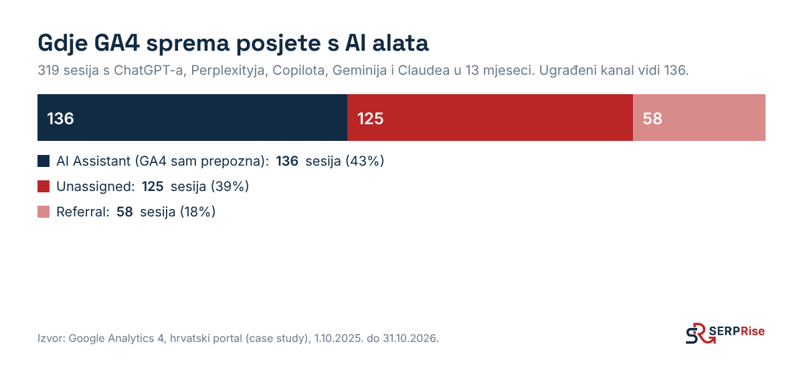
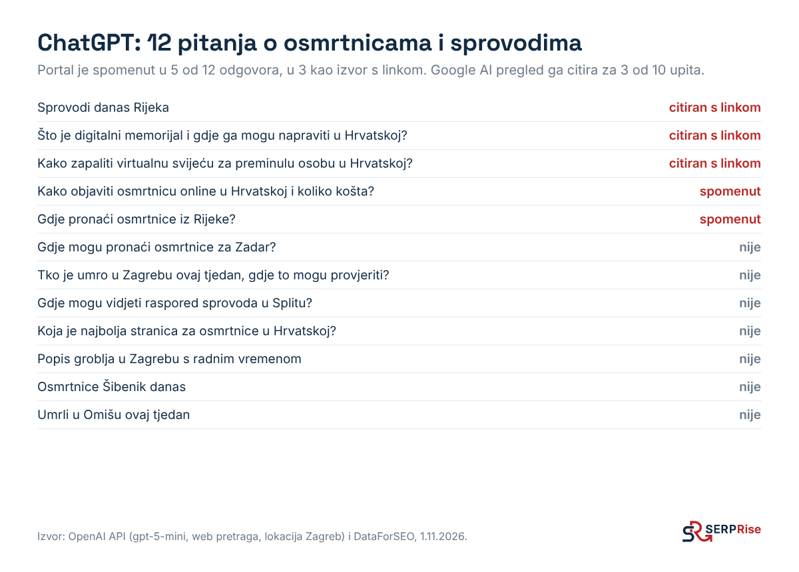

Četiri besplatna alata pokrivaju 90% onoga što trebate znati: GA4 za posjete s AI alata, Search Console za Google AI preglede, Bing Webmaster Tools za Copilot i mjesečna tablica pitanja za ChatGPT.
GA4 ima ugrađeni kanal za AI asistente, ali on hvata manje od polovice stvarnih posjeta. Na hrvatskom portalu iz Koraka 4 ugrađeni kanal je u 13 mjeseci uhvatio 136 od 319 posjeta s AI alata. Ostatak je bio u "Unassigned" i "Referral".

.*(chatgpt|openai|perplexity|gemini|copilot|claude|deepseek|mistral|grok).*
Google je izvještaj uveo svim webovima do 31.8.2026. Ako ga ne vidite, web vjerojatno još nema dovoljno impresija u AI značajkama. To je samo po sebi podatak: znači da vas AI pregledi za sada ne prikazuju. Izvještaj broji samo impresije, ne klikove, pa impresija ne znači posjet.
Grounding upiti iz Binga su zlato za Korak 1: to su točne pretrage koje AI pokreće kad odgovara o vašoj temi. Dodajte ih u popis ključnih riječi.
Svakog prvog u mjesecu ponovite test iz Koraka 2 s istim pitanjima, istim redom, u privremenom chatu. Ne mijenjajte pitanja između mjerenja. Novo pitanje dodajte kao novi redak, ali ga ne uključujte u usporedbu s prošlim mjesecom.
U kontakt formu dodajte padajući izbornik "Kako ste nas pronašli?" s opcijom "ChatGPT ili drugi AI alat" i polje "Što ste upisali?". To je jedini način da saznate točno pitanje koje je kupca dovelo.
U našem admin sučelju je kartica "Ciljani pojmovi": za svaki pojam pozicija na Googleu, ima li AI pregled i citira li nas, i spominje li nas ChatGPT, uz promjenu iz mjeseca u mjesec. Mjerenje se pokreće automatski svakog prvog u mjesecu. Za klijente isti pregled dobivaju u svom dashboardu.
Pet brojki, jednom mjesečno, u istoj tablici. Ništa više ne treba.
| Brojka | Odakle | Kako izračunati |
|---|---|---|
| 1. Udio AI odgovora | Mjesečna tablica | U koliko od 40 ChatGPT odgovora ste spomenuti. Npr. 6 od 40 = 15% |
| 2. AI pregledi koji vas citiraju | Ručna provjera ili alat | Za koliko od vaših ključnih riječi ste izvor u AI pregledu |
| 3. AI posjeti i upiti | GA4, kanal "AI asistenti" | Sesije i ključni događaji (upiti, pozivi) s AI alata |
| 4. AI impresije na Googleu | Search Console, Generative AI | Impresije za Hrvatsku i koje stranice ih dobivaju |
| 5. Novi spomeni | Vaša tablica iz Koraka 5 do 7 | Koliko je novih imenika, lista i članaka ovaj mjesec |

| Što vidite | Što znači | Što napraviti |
|---|---|---|
| Udio AI odgovora skače gore-dolje za 5 do 10 postotnih bodova | Normalno. AI odgovori nisu stalni | Gledajte trend kroz 3 mjeseca, ne jedan mjesec |
| Spomenuti ste, ali bez linka | AI vas zna iz tuđih izvora, ali vaša stranica ne odgovara na pitanje | Korak 4: uslužna stranica s riječima iz pitanja i cijenom |
| Rastu AI impresije u Search Consoleu, a klikovi ne | Izvor ste, ali AI odgovor je dovoljan i bez klika | Na stranicu dodajte ono što AI ne može dati: kalkulator, točnu ponudu, rezervaciju, primjere |
| Brend pitanja da, kategorijska ne | Web je dobar, ali treće strane o vama ne pišu | Koraci 6 i 7: liste, portali, PR |
| Google da, ChatGPT ne | Moguće da niste u Bingu ili ChatGPT ne vidi sadržaj | Korak 4: Bing Webmaster Tools, robots.txt, JavaScript test |
| AI posjeti malo, ali s upitima | Mali kanal s visokom namjerom | Nastavite. Na portalu iz primjera posjetitelj s ChatGPT-a pregleda 2,2 stranice po sesiji, a s Googlea 1,5 |
| Ništa se ne mijenja 3 mjeseca | Premalo spomena izvan weba ili pogrešna pitanja | Ponovite Korak 3 i provjerite citira li AI uopće izvore za vaša pitanja |
Klijentima šaljemo mjesečni izvještaj s istih pet brojki i popisom što je napravljeno taj mjesec. Ciljeve postavljamo po pitanjima, ne po prometu: npr. "do kraja godine izvor u AI pregledu za 3 pojma i spomen u 8 od 32 ChatGPT odgovora". Takve ciljeve smo postavili i za SERPRise.